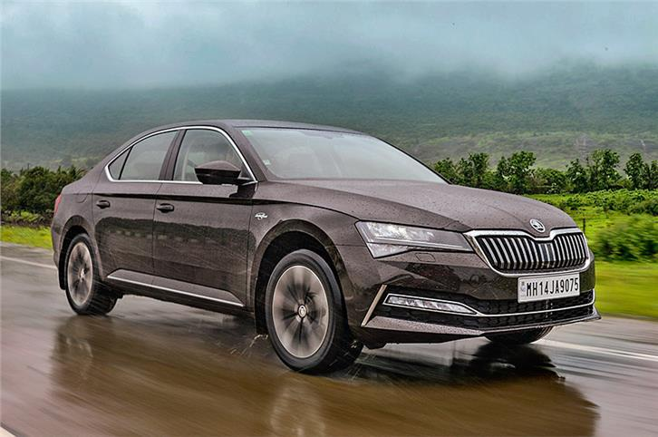

The Skoda Octavia has 1 Petrol Engine on offer. The Petrol engine is 1984 cc . It is available with Automatic transmission.Depending upon the variant and fuel type the Octavia has a mileage of 15.81 kmpl & Ground clearance of Octavia is 137. The Octavia is a 5 seater 4 cylinder car and has length of 4689, width of 1829 and a wheelbase of 2680.
-Some key specifications:
City mileage: 15.81 kmpl
Engine Displacement:1984
Max Power:187.74bhp@4180-6000rpm
Seating Capacity: 5
Fuel Type: Petrol
Transmission Type: Automatic
Boot Space: 600L
Service Cost:(Avg. of 5 years)Rs.15,721
No. of cylinder: 4
Max Torque (nm@rpm):320nm@1500-3990rpm
Fuel Tank Capacity: 50.0L
Ground Clearance Unladen:
Turbo Charged: Yes
Drive Type: FWD
For more details you can visit the official website:
